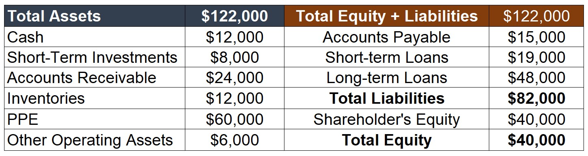
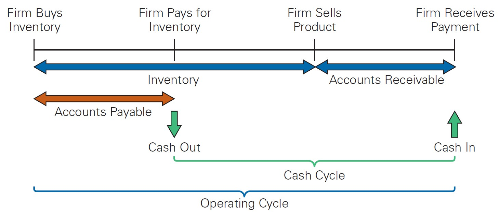
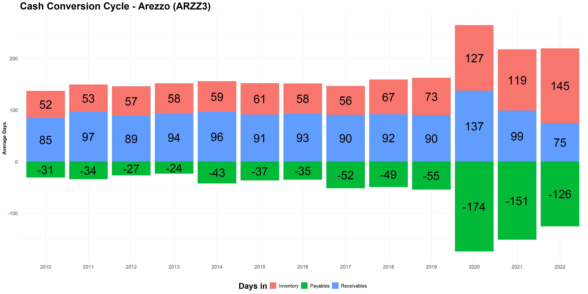
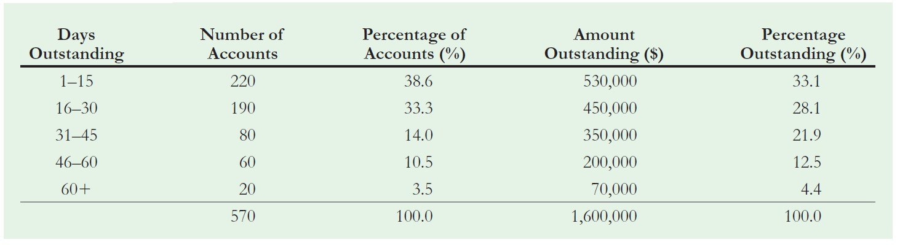

Company | Industry | Receivable Days | Inventory Days | Payable Days | Cash Conversion Cycle |
|---|---|---|---|---|---|
Coca-Cola | Beverages | 43 | 81 | 297 | -173 |
T-Mobile | Telecommunications | 36 | 24 | 155 | -95 |
Sirius XM | Cable and Satellite | 14 | 2 | 108 | -92 |
Molson Coors Brewing | Brewing | 26 | 34 | 143 | -83 |
Apple | Computer Hardware | 24 | 19 | 106 | -63 |
Amazon.com | Internet Retail | 11 | 43 | 76 | -22 |
Southwest Airlines | Airlines | 12 | 11 | 31 | -8 |
Chipotle Mexican Grill | Restaurants | 2 | 2 | 11 | -7 |
Walmart | Superstores | 4 | 42 | 44 | 2 |
Kroger | Grocery Stores | 5 | 25 | 23 | 6 |
Microsoft | Software | 66 | 22 | 72 | 17 |
Macy's | Department Stores | 4 | 140 | 124 | 21 |
Starbucks | Restaurants | 12 | 29 | 19 | 23 |
FedEx | Air Freight | 46 | 4 | 23 | 27 |
Nordstrom | Department Stores | 4 | 83 | 57 | 30 |
Bristol-Myers Squibb | Pharmaceuticals | 88 | 70 | 101 | 57 |
Nike | Footwear | 34 | 90 | 37 | 88 |
ONE Gas | Gas Utilities | 73 | 47 | 30 | 90 |
Lennar Corporation | Homebuilding | 5 | 376 | 21 | 359 |
Tiffany & Co. | Luxury Goods | 20 | 532 | 58 | 494 |
Brown-Forman | Distillers and Vintners | 83 | 548 | 122 | 509 |
U.S. Firms | - | 50 | 70 | 79 | 41 |
Working Capital Management
Decomposing Asset Turnover
In this lecture, we’ll focus on the Asset Turnover component:
\[ \small ROE=\dfrac{\text{Net Income}}{\text{Sales}}\times \underbrace{\dfrac{\text{Sales}}{\text{Assets}}}_{\text{Asset Turnover}}\times \dfrac{\text{Assets}}{\text{Equity}} \]
Since firms invest considerable resources in their assets, using them productively is critical to overall profitability
There are two primary areas of investment management that are relevant to Asset Turnover:
- Working capital Management
- Management of long-term assets
In this lecture, we’ll extensively follow (Berk and DeMarzo 2023) to study Working Capital Management
Working Capital Management

- Definition: working capital is the difference between a firm’s current assets and current liabilities. It does not distinguish between operating and financing components:
- Operating: Accounts Receivable, Inventory, and Accounts Payable, Cash (excluding non-excess cash), etc
- Financing components: Excess Cash, Marketable securities, and Notes Payable
Why Working Capital is so important?
Our general definition for Net Working Capital is Current Assets - Current Liabilities
If this number is positive, is this good or bad? It depends!
- Having current assets higher than current liabilities tells us something about the firm’s liquidity…
- However, within these accounts, we’ll see items such as Cash, Inventories, and Accounts Receivable…
Notably, there are opportunity costs associated with investing in inventories and accounts receivable, and from holding cash
For example, excess funds invested in these accounts could instead be used to pay down debt or returned to shareholders in the form of a dividend or share repurchase.
To this point, Working Capital Management aims to manage working capital efficiently and thereby minimize these opportunity costs!
Why Working Capital is so important? An example…
Let’s get back to the pizza vendor example that we had in our first class…
- We know that, to run a food-business like this, we need fixed investments on Equipments, Machinerys, Buildings, etc
- But after these are set in place, we need to worry about the flow of the operations!
Examples:
- We need money to buy the core ingredients and to make up some inventory
- We also need to have a cushion to pay salaries for delivery/production/waiter workers
- There will also be electric, water, sewage bills, along with other fixed costs that we’ll need to cushion
Note that the operation cannot generate cash if we don’t have these assets in place
These are certain expenditures that we will continuously have as the operation flows – hence working capital
Working Capital, another example
A certain amount of investment in working capital is generally necessary for the firm to run its normal operations
To make this point clear, think about any mass retailer, such as Arezzo (ticker: ARZZ3):
- To ensure that consumers are buying, retailers might need to provide a flexible payment method \(\rightarrow\) increased investment on Accounts Receivable
- To ensure that the goods are delivered on time, we might need to have inventories in place \(\rightarrow\) increased investment on Inventories
- However, as ARZZ3 is a big retailer, it also may have good contracting terms with its suppliers to pay its inventory later \(\rightarrow\) increased Accounts Payable
- Often, the interaction between these three accounts yields an important part of operating working capital needed for the business!
The Cash and Operating Cycle
- The level of working capital reflects the length of time between when cash goes out of a firm at the beginning of the production process and when it comes back in:
- A company first buys inventory from its suppliers, in the form of either raw materials or finished goods
- After receiving the inventory, even if the inventory is in the form of finished goods, it may sit on the shelf for some time
- Finally, when the inventory is ultimately sold, the firm may extend credit to its customers, delaying when it will receive the cash
- The main components of net working capital are cash, inventory, receivables, and payables. To that matter, we can use the most important parts of a firm’s net working capital to define the cash and operating cycle
Cash and Operating Cycle Dynamics

Definition: A firm’s cash cycle is the length of time between when the firm pays cash to purchase its initial inventory and when it receives cash from the sale of the output produced from that inventory
Cash Cycle Dynamics, continued
The longer the firm’s cash cycle, the more working capital it has, and the more cash it needs to carry to conduct its daily operations
Because of the characteristics of different industries, working capital levels vary significantly
Policies that increase the firm’s Cash Cycle:
If a firm extends the credit terms to its clients from 30 to 60 days \(\rightarrow\) increased investment in Accounts Receivable
If the firm takes more time to produce its finished goods \(\rightarrow\) the higher is the time that inventories are stocked \(\rightarrow\) increased investment in Inventories
Policies that decrease the firm’s Cash Cycle:
- If a firm receives more time to pay for its raw materials \(\rightarrow\) increased liabilities in Accounts Payable
Cash Conversion Cycles by Industry
Determining the Cash Cycle
- Some practitioners measure the cash cycle by calculating the cash conversion cycle. The cash conversion cycle (CCC) is defined as
\[ \small CCC= \text{Accounts Receivable Days}+\text{Inventory Days}- \text{Accounts Payable Days} \] Where:
\[ \small \text{Accounts Receivable Days}= \dfrac{\text{Accounts Receivable}}{\text{Average Daily Sales}} \]
\[ \small \text{Inventory Days}= \dfrac{\text{Inventory}}{\text{Average Daily COGS}} \]
\[ \small \text{Accounts Payable Days}= \dfrac{\text{Accounts Payable}}{\text{Average Daily COGS}} \]
Estimating the Cash Conversion Cycle
Suppose that a firm has \(\small \$100,000\) in account receivables, \(\small\$50,000\) in inventory, and \(\small\$25,000\) in accounts payable. It has reported sales of about \(\small \$1,000,000\) and its Cost of Goods Sold (COGS) represent \(\small 40\%\) of total revenues. Calculate the Cash Conversion Cycle. Assume a 365-day year.
Now, we’ll calculate the Cash Conversion Cycle of the firm by looking at its individual components
\(\rightarrow\) See CCC Dynamics.xlsx, available on eClass®, for a detailed explanation on cash conversion cycle dynamics using this lecture’s example.
Step 1: Inventory Days
- The firm has \(\small\$50,000\) in Inventory
- It had reported COGS of \(\small 40\% \times 1,000,0000=\$400,000\)
- The Inventory Conversion is then:
\[ \small IC=\dfrac{Inventory}{\dfrac{COGS}{365}}\rightarrow \dfrac{50,000}{\dfrac{400,000}{365}}\rightarrow \dfrac{50,000}{1,096}\approx \text{45.6 days} \]
- Interpretation: if the firm had \(\small \$400,000\) in product costs yearly, this translates to a daily average of \(\small \$1,096\). If there’s \(\small \$50,000\) in Inventories, it means that it takes, on average, \(\small \$50,000/\$1,096=45.6\) days for Inventories to be finished.
Step 2: Accounts Receivable Days
- The firm has \(\small\$100,000\) in Receivables
- It had reported Sales of \(\small \$1,000,0000\)
- The Accounts Receivable Conversion is then:
\[ \small ACC=\dfrac{Receivables}{\dfrac{Sales}{365}}\rightarrow \dfrac{100,000}{\dfrac{1,000,000}{365}}\rightarrow \dfrac{100,000}{2,739}\approx \text{36.5 days} \]
- Interpretation: if the firm had \(\small\$1,000,000\) in Sales yearly, this translates to a daily average of \(\small\$2,739\). If there’s \(\small100,000\) in Receivables, it means that it takes, on average, \(\small \$100,000/\$2,739=36.5\) days for a given client to pay the firm, after it has bought the product.
Step 3: Accounts Payable Days
- The firm has \(\small\$25,000\) in Payables
- It had reported COGS of \(\small 40\% \times \$1,000,0000=\$400,000\)
- The Accounts Payable Conversion is then:
\[ \small APC=\dfrac{Payables}{\dfrac{COGS}{365}}\rightarrow \dfrac{25,000}{\dfrac{400,000}{365}}\rightarrow \dfrac{25,000}{1,096}\approx \text{22.8 days} \]
- Interpretation: if the firm had \(\small\$400,000\) in COGS yearly, this translates to a daily average of \(\small\$1,096\) If there’s \(\small\$25,000\) in Payables, it means that it takes, on average, \(\small \$25,000/\$1,096=22.8\) days for the firm to pay its suppliers, after it bought the Inventory.
Step 3: putting all together
- Recall that the Cash Conversion Cycle is defined as:
\[ \small CCC= \text{Accounts Receivable Days}+\text{Inventory Days}- \text{Accounts Payable Days} \]
- Using our formula, we have:
\[ \small CCC= \text{36.5}+\text{45.6}- \text{22.8}\approx \text{59.3 days} \]
It means that, on average, it takes roughly 60 days for the firm to receive from its clients after it paid for its inventories.
- If CCC>0 \(\rightarrow\) the firm needs to invest in Working Capital to be able to pay its obligations before receiving from clients
- If CCC<0 \(\rightarrow\) the firm receives from clients before it actually had to pay its suppliers
Changing the Accounts Payable
- Suppose that the firm has made an arrangement with its suppliers to be able to pay in 40 days. What is the effect of this policy?
First, we can see that the new CCC is \(36.5+45.6-40\approx 42.1\) days. Why is this important? Because it reduces the net working capital requirement!
In order to see that, recall that, on average, the firm pays \(\$400,000/365\approx \$1,096\) to its suppliers on a daily basis. Therefore, as there’s an increase from 22.8 \(\rightarrow\) 40 days, the new level of accounts payable is:
\[ \small APC=\dfrac{Payables}{\dfrac{COGS}{365}}\rightarrow 40=\dfrac{Payables}{1,096}\rightarrow Payables= 43,835 \]
Changing the Accounts Payable, continued
- Therefore, the change in the Net Working Capital is simply given by the difference in Accounts Payable:
\[ \small \Delta Payables=43,835-25,000=18,835 \]
The company was able to free-up $18,835 of resources that can be either paid off to shareholders as dividends or reinvested in other activities or even financial instruments
Also, if we distributed this value, as we’re keeping the Sales numbers constant, but being able to do so with a lower level of assets, we are increasing the firms’s Operating Asset Turnover, and hence, the ROIC
Practical Example, Arezzo (ARZZ3)

Understanding Working Capital nuances
Working capital (or Net Working Capital) is the difference between a firm’s current assets and current liabilities
It does not distinguish between operating and financing components:
- Operating: Accounts Receivable, Inventory, and Accounts Payable, Cash (excluding non-excess cash), etc
- Financing components: Excess Cash, Marketable securities, and Notes Payable.
To what it concerns us the most, Operating Working Capital is the portion that relates to the cash that is needed to run the operating part
Think, for example, about our last lecture on Economic Value Added - EVA. Ideally, we would like to know the amount of capital that has been invested in the Operation, excluding any financial effects.
Important: watchout for definitions!
Important
In Chapter 2 of Berk and DeMarzo, Working Capital is defined as Current Assets - Current Liabilities. In Chapter 26, however the authors state that “[…] working capital management involves short-term asset accounts such as cash, inventory, and accounts receivable, as well as short-term liability accounts such as accounts payable”.
Why do we have these distinctions? It is important to understand that, within working capital, we have Financing and Operating Accounts
We can use the operating accounts to calculate the Operating Working Capital, which is formally defined as Current Operating Assets - Current Operating Liabilities
\(\rightarrow\) Berk and DeMarzo uses Accounts Payable, Receivables, and Inventories (the main components) to calculate the Cash Conversion Cycle, but keep in mind that Operating Working Capital contains all current operating accounts!
Cash and Operating Cycle Dynamics
As of now, we defined what Working Capital is and how to measure it
Question: which policies a Financial manager can adopt to manage working capital?
Working Capital Policies
We saw that investment in working capital are necessary, but incur in an opportunity cost:
By increasing inventories, not only there are increasing costs of maintaning a physical structure, but also we are losing the opportunity to invest and earn additional income
Holding cash as a precautionary motive precludes the firm from being able to earn interest
Having a high level of account receivables also precludes the firm from earning interest on the money
Because of these reasons, aiming to optimize working management entails the creation of policies that seek to:
- Provide all the resources that the firm needs in order to run its operations; and
- At the same time, minimize the (opportunity) costs related to it
In what follows, we will look at the most common working capital policies, understand how their work, and estimate their effects
Trade Credit
The credit that the firm is extending to its customer is known as trade credit
- A firm would, of course, prefer to be paid in cash at the time of purchase
- However, a “cash-only” policy may cause it to lose its customers to competition
Trade credit is, in essence, a loan from the selling firm to its customer
- The price discount represents an interest rate
- Firms offer favorable interest rates on trade credit as a price discount to their customers
Understanding the terminology: what is “2/10, Net 30”? It means that the buying firm will receive a \(\small 2\%\) discount if it pays for the goods within \(\small 10\) days; otherwise, the full amount is due in \(\small 30\) days
As a Financial Manager, it is important to understand that Trade Credit has a cost (or a discount): by taking an offer to pay later, what is the additional cost that the firm needs to incur?
Calculating the Cost of Trade Credit
Suppose that a firm purchases goods from its supplier on terms of 5/15, Net 40. What is the effective annual cost to your firm if it chooses not to take advantage of the trade discount offered?
Because the discount is \(\small5\%\), for a \(\small\$100\) bill, a firm faces the following options:
- Pay \(\small\$95\) in \(\small 15\) days; or
- Pay \(\small\$100\) in \(\small40\) days
Given that the difference is \(\small(40-15)=25\) days, it means that the cost is \(\small 100/95-1\approx 5.26\%\) during the period. In order to see this in annual terms, we have:
\[ \dfrac{100}{95}\approx 1.0526\rightarrow(1.0526)^{365/25}-1\approx111.5\%! \]
If Trade Credit is costly, why it exists?
In our previous example, by not taking the discount, the firm is effectively paying \(\small111.5\%\), at an annual rate, to borrow the money.
If the firm can obtain a bank loan at a lower interest rate, it would be better off borrowing at the lower rate and using the cash proceeds of the loan to take advantage of the discount offered by the supplier
But if that is the case, why we see so much trade credit in the market?
- It is simple and convenient \(\rightarrow\) lower transaction costs
- It is flexible
- Sometimes, it is the only funding resource that a firm can obtain
- Why should a firm ever provide trade credit?
Reasons to provide Trade Credit
- Screening different client types: rather than lowering the price for all clients, we may offer specific credit terms that are attractive to customers with bad credit, but unattractive to customers with good credit:
- Bad credit clients would take the discount since they would not have any better offer elsewhere; and
- Good credit clients would not be interested in taking the discount and would pay the full price
- Customer-Supplier relationships:
- Sometimes, the supplier may have more information about the customer than the bank has, and thus provide more interesting terms
- It could also threaten to cut off future supplies
- Finally, seizing the inventory collateral in case of default is likely to be much more valuable to the supplier than the bank
Float
Float refers to the length of a firm’s receivables and payables is the delay between the time a bill is paid and the cash is actually received. This delay, or processing float, will impact a firm’s working capital requirements.
In the past, Float seemed to be much more relevant due to the alternatives that were in place:
- Cash
- Electronic Check processing
- Transfer Deposits (in Brazil, DOC and TED)
As technology disrupts the financial marketplace, float reduced significantly
Question: what happens with the introduction of PIX?
Credit Policy
- A firm can better manage its receivables by establishing a clear credit policy:
- Establishing Credit Standards:
- What is the criteria to extend credit?
- Internal evaluation versus the use of credit rating agencies
- Establishing Credit Terms:
- After creating the criteria, what will be the credit terms?
- This is also highly influenced by competition and industry standards
- Establishing a Collection Policy:
- In case of default, what should the firm do?
- Policies range from seizing inventory, interest expenses, legal actions
- Debt Collection business (collection agencies)
Monitoring Accounts Receivable - Average Receivable Days
After establishing a credit policy, a firm must monitor its accounts receivable to analyze whether its credit policy is working effectively. There are two common ways of doing so:
Monitoring the average receivable days: the accounts receivable days is the average number of days that it takes a firm to collect on its sales.
- A firm can compare this number to the payment policy specified in its credit terms to judge the effectiveness of its credit policy
- If the credit terms specify “Net 30” and the accounts receivable days outstanding is \(\small 50\) days, the firm can conclude that its customers are paying \(\small20\) days late, on average
Note that this has the benefit of being feasible only with balance-sheet data. Notwithstanding, it conveys little information about the specificities of the due payments
Monitoring Accounts Receivable - Aging Schedules
- Aging Schedules provide more detailed information regarding the specifics of due payments.

- If, for example, the Credit Policy established \(\small 30\) days, it means that the dollar percentage due is \(\small 21.9+12.5+4.4=38.8\%\)
Payables Management
What to do with the liabilities that we have with suppliers?
- A firm should choose to borrow using accounts payable only if trade credit is the cheapest source of funding
- If not, a firm can finance its working capital needs via other sources or pay in advance
A firm should strive to keep its money working for it as long as possible without developing a bad relationship with its suppliers or engaging in unethical practices
In addition, a firm should always pay on the latest day allowed, considering the option taken:
- If the discount period is \(\small 10\) days and the firm is taking the discount, payment should be made on day \(\small 10\), not on day \(\small 2\)
- If the discount is not taken and the terms are 2/10, Net 30, the full payment should be made on day \(\small 30\), not on day \(\small 16\)
Payables Management - Accounts Payable Outstanding
Similar to the situation with its accounts receivable, a firm should monitor its accounts payable to ensure that it is making its payments at an optimal time
One way is to the accounts payable days outstanding and compare it to the credit terms
Suppose that a firm has an average accounts payable balance of \(\small\$250,000\). Its average daily cost of goods sold is \(\small \$14,000\), and it receives terms of 2/15, Net 40, from its suppliers. The firm chooses to forgo the discount. Is the firm managing its accounts payable well?
A: the account payable days is \(\small 250,000/14,000= 17.9\) days. There are two cases:
- If the firm made payment three days earlier, it could take advantage of the \(\small2\%\) discount
- If for some reason it chooses to forgo the discount, it should not be paying the full amount until the fortieth day
Important Note: these are average terms and do not refer to specific payments.
Payables Management - Stretching Accounts Payable
Some firms ignore the payment due period and pay later, in a practice referred to as stretching the accounts payable.
For example, given terms of 2/10, Net 30, for example, a firm may choose to not pay until \(\small 45\) days have passed.
Example: what is the effective annual cost of credit terms of 1/15, Net 40, if the firm stretches the accounts payable to \(\small 60\) days?
A: the interest rate per period is \(\small 1/99=1.01\%\). If the firm delays the payment until the 60th day, it has used the funds for 45 days beyond the agreed period. Therefore, the annual effective rate is \(\small (1.0101)^{365/45}-1=8.49\%\), as opposed to what has been established before, which is \(\small (1.0101)^{365/15}-1=27.39\%\)
- There may be direct and indirect costs of streching the accounts payable (e.g, retaliation, cash-on delivery and cash-before delivery policies, reduced supply, lower credit ratings)
Inventory Management
- If holding inventory is costly, why do firms ever keep high levels of inventory?
Benefits of holding inventory
- If a firm holds too little inventory, stock-outs, the situation when a firm runs out of goods, may occur, leading to lost sales
- Likewise, disappointed customers may switch to one of the firm’s competitors
- It might be optimal for firms to hold inventory because of the seasonality in demand
Costs of holding inventory
- Acquisition Costs
- Order Costs
- Carrying Costs
\(\rightarrow\) For a detailed discussion, see (Berk and DeMarzo 2023), Chapter 26.
Cash Management
- If firms could perfectly tap into resources at any time needed, there would be no need for holding cash:
- Firms could invest 100% of its money in operations
- In case of a mismatch, raise money at a fair rate to make up the differences
- On the one hand, holding cash is costly, as we liquid assets may earn below-average returns
- On the other hand, firm’s may face a much higher cost if there’s ever need for raising cash quickly (e.g, financial distress periods)
Because of these reasons, firms may hold cash for some specific reasons:
- Transactions Balance: day-to-day operations
- Precautionary Motives: uncertainty regarding the firms cash flows
- Compensating Balance: credit agreements
Supplementary Material
Harvard Notes
- Dell’s Working Capital
- Trade Credit
- Credit Analysis Basics
What to do with excess cash? See more on the Money Market Industry (in special, the American Money Market Funds)
A note on The Economist about the Debt Collection industry: access here
\(\rightarrow\) All contents are available on eClass®.